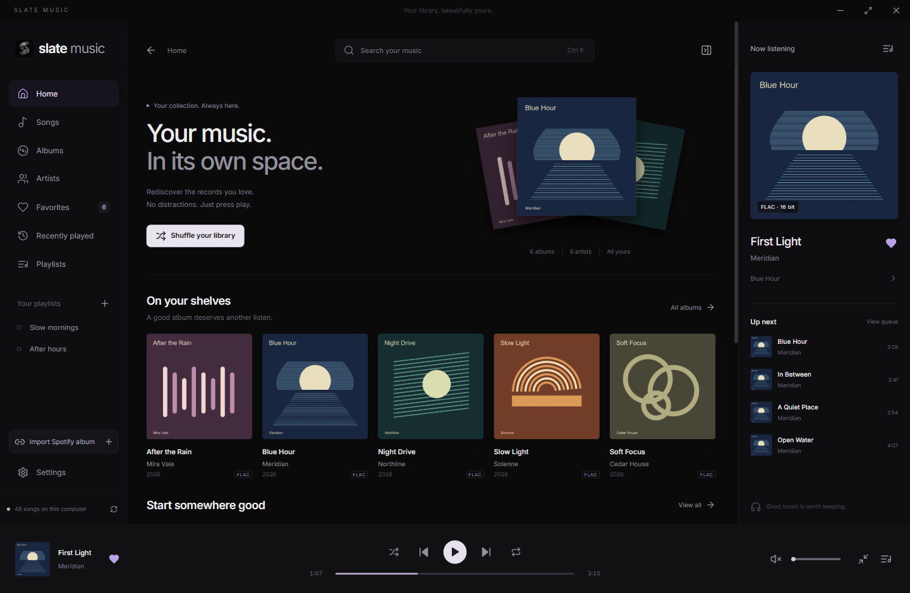
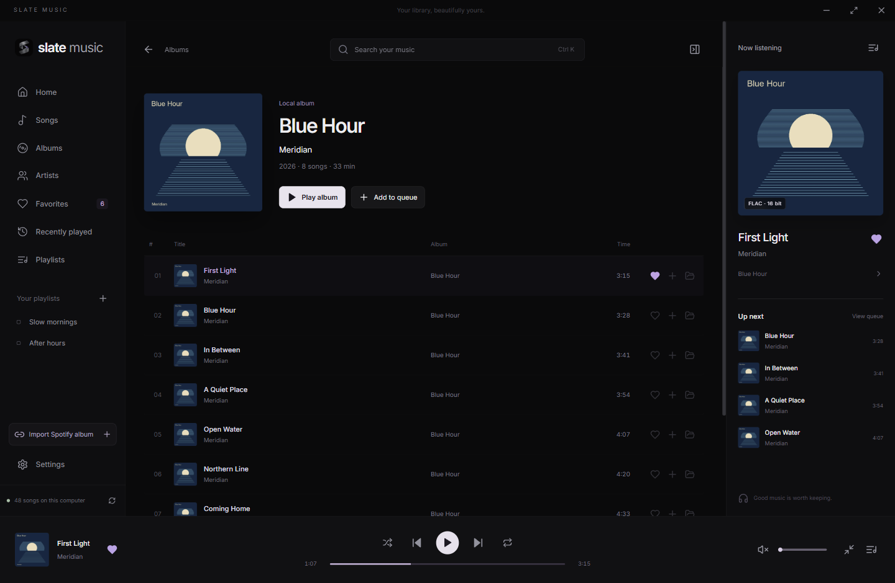
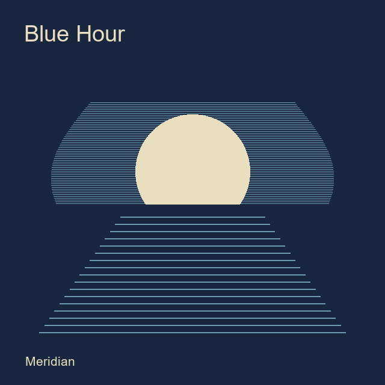

Find your way back.
Browse by album or artist. Search in a moment. Keep favorites close and make playlists for whatever comes next.
A beautiful home for the records you own. A local music player that puts listening first.
Download for WindowsWindows 10 / 11 · v1.0.1 · Free & open source

Local by nature. Your library works offline.
Made for listening. Gapless, with room to breathe.
Always yours. Your files stay untouched.
The sleeves, the track order, the song you forgot you loved. Give your collection a place that feels like it belongs.

Album view, with a demo record.Browse by album or artist. Search in a moment. Keep favorites close and make playlists for whatever comes next.
Native gapless playback keeps consecutive tracks together. Or choose a gentle crossfade, from 2 to 12 seconds.
Your queue, playlists and listening position are remembered. Reopen to a paused session, ready when you are.
Keyboard shortcuts, Windows media controls, and a mini-player that stays out of the way.
Watched folders, incremental rescans, artwork caching and clear unavailable-file states.
No player account. No analytics. Local playback and organization work without a connection.
Paste a Spotify album link. Slate Music looks for the matching recordings in your local library, keeping the original album order.
Review uncertain matches, correct versions, and save a virtual album or playlist. Missing tracks stay visible and out of the playable queue.
Read the connection guideMetadata matching only. No Spotify audio downloads. Connecting requires your own Spotify developer app and an eligible account.

Meridian
Album order, preservedA few moments to set up.
Your collection takes it from there.
Download the Windows x64 installer, run it, then open Slate Music from Start.
Slate reads your tags and album artwork. Your music files and folders stay exactly as they are.
Build your queue, save your favorites, or let shuffle find something you haven’t heard in a while.
The useful details.
FLAC, MP3, WAV, AAC/M4A, ALAC, Ogg Vorbis and AIFF have been tested. Raw AAC has limited seeking support. Opus, WMA, APE, DSD and protected files are not supported.
Output uses the Windows default device at 48 kHz stereo. Exclusive and bit-perfect output are not supported. See audio details.
Yes. Local playback, search, playlists and your saved library work offline. Spotify metadata import and update checks use the internet. You can disable automatic update checks and downloads in Settings.
No. Slate Music reads your files and stores its own library database separately. It does not retag, move, rename or delete your music. Playlists, favorites and virtual albums live in Slate’s database.
Windows 10 or 11, a 64-bit x64 PC, WebView2 and a working audio output. WebView2 is usually already installed; setting it up on a new PC may need internet.
The installer does not currently have a Windows Authenticode publisher certificate, so Windows may show an unknown-publisher warning. Download only from the official GitHub release.
Updates are checked and downloaded automatically by default. Update files and their version are verified cryptographically. Installation requires confirmation while paused, or your choice to install on exit. Your library and settings are preserved.
Yes. Slate Music is free and open source under the MIT license. No Slate account or subscription is needed. Spotify controls eligibility for its optional metadata API; see the Spotify setup guide.
For Windows 10 / 11. Yours to enjoy.
Release notes & all downloads